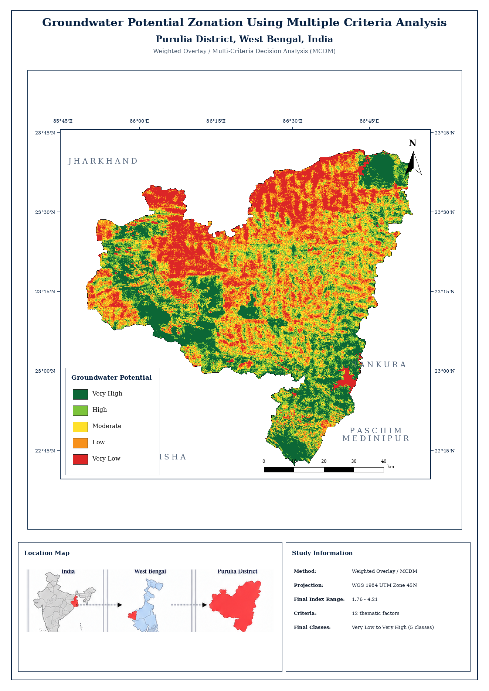

Groundwater Inspector
Click inside Purulia to inspect the result
Final class, continuous index and active criterion score will appear here.

All 12 groundwater suitability score rasters, final index, final 5-class zones, Purulia boundary, geology GeoJSON, final layout and README.
Download ZIPFinal classified GeoTIFF. Class 1 = Very Low and Class 5 = Very High groundwater potential.
Download GeoTIFFWeighted continuous index used to derive the final groundwater potential classes.
Download GeoTIFFClipped NGDR 2M geology vector used for the geology suitability criterion.
Download GeoJSON